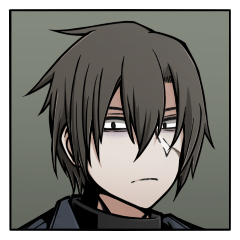

- 登場人物 -

安武 陸
無所属のハンター

赤木 叶恵
D7所属の接触者

敷村 修也
曙光騎士団所属のハンター

迷ノ宮 光葉
八角宗家のお嬢様

海野 標
陸の師匠

赤木 恵夢
叶恵の姉

灰葉 陽
修也の近所のお姉さん

迷ノ宮 御影
光葉の兄
プレイヤーキャラクター
PC1
安武 陸
（やすたけ りく）
【防御力】1 【行動力】0
幸福「海野標」《人脈》強度3
──師匠。命の恩人。友達。弟が生きていればこれくらい。友達の姉の好きな人。俺を救って、3人を託して、いなくなった人。
幸福「背徳：誰かを守れる力」《自信》強度1
──もし、俺が吸血鬼だったり、モノビーストだったりしたら。
PC2
赤木 叶恵
（あかぎ かなえ）
【防御力】1 【行動力】0
幸福「背徳：赤木恵夢」《人脈》強度3
──あの日、狩人たちの力はモノビーストへと届き、自分は姉を守り抜くことができた。
……そうあって欲しかった。
……そうあって欲しかった。
幸福「背徳：幸せに生きる」《地位》強度1
──幸せに生きよう。大事な人にそう託された。
だから幸せになりたい。
どんな方法でもいいから嬉しく、楽しく、心地よくなりたい。
けれど果たして本当に、そんな事ができるのだろうか。
幸せになれるとは思えない。思いたくない。
自分が本当に願っているのは──
不幸な生、あるいは幸福な死なのではないだろうか。
だから幸せになりたい。
どんな方法でもいいから嬉しく、楽しく、心地よくなりたい。
けれど果たして本当に、そんな事ができるのだろうか。
幸せになれるとは思えない。思いたくない。
自分が本当に願っているのは──
不幸な生、あるいは幸福な死なのではないだろうか。
PC3
敷村 修也
（しきむら しゅうや）
【防御力】1 【行動力】0
幸福「小さな楽しみ」《人脈》強度1
──松井さんに決めてもらったささやかな楽しみ。
幸福「背徳：羨望」《自信》強度1
──自分には与えられなかったもの。
PC4
迷ノ宮 光葉
（まよいのみや みつは）
【防御力】0 【行動力】2
幸福「仲間の皆」《日常》強度1
──皆を守りたい。
幸福「背徳：迷ノ宮 御影」《人脈》強度3
──お兄様をお慕い申し上げる心。
ノンプレイヤーキャラクター
海野 標（うみの しるし）
陸の師匠。吸血鬼クロニック・ラヴとの戦いの最中運命変転魔法『クロニック・ラヴ』を発動し、その存在は消え失せた。
赤木 恵夢（あかぎ めぐむ）
叶恵の姉。高校三年生。四年前に殺人事件に巻き込まれ、なんとか一命を取り留めた過去がある。
そんな過去を感じさせないような夢見がちで能天気な性格の持ち主。
モノビースト：ワンダー・トリップ・ラヴァーと狩人たちの戦いに割り込み、虹炎の中へ命を落とした。
灰葉 陽（はいば ひなた）
修也の近所に住んでいたお姉さん。五年前に殺されている。当時高校一年生。
彼女を殺したのはクイーン・オー・ランタンであったことが明らかになっている。
迷ノ宮 御影（まよいのみや みかげ）
光葉の兄。八角宗家の出だが、ウィッカーマン所属のハンターとして活動していた。
叶恵の師匠でもある。
吸血鬼クロニック・ラヴの側についた末、今は再び昏睡状態へと陥っている。

空韻 風香（そらおと ふうか）
吸血鬼クロニック・ラヴとなったらしき少女。五年前に失踪している。当時小学四年生。